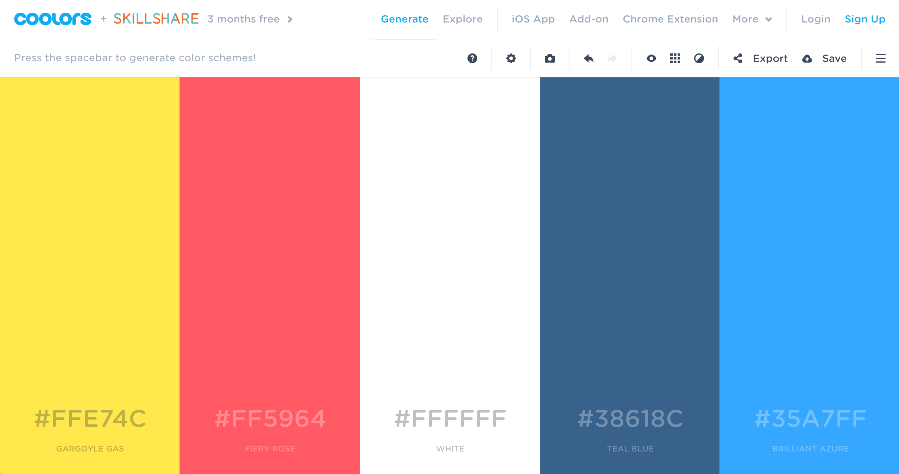

CG221
CG221
My Favorite Internet 1
This week I chose to compare two color scheme generators.
Coolors
This week I was really inspired by the Coolors, a color palette generator. I like using this app to make color schemes because it automatically pics colors that look great together. The interaction is simple – just press the space bar to generate new colors. You can lock colors that you like and keep generating other colors. You can also use the arrow keys to go back if you change your mind. You can also type in an existing color code and make schemes based on this. As a graphic designer, I could see how this would be very useful for developing branding.
Colour Code

Prior to finding Coolors, I used Colourco.de, a similar app for choosing color schemes. When you come to the website, you are shown one color. This color changes based on your mouse location. Once you are happy with your first color, you can create a scheme based on color theory. These include options like monochrome, complimentary, and triadic. While this can be very useful to professional designers and artists, I imagine that it could be intimidating to an outsider or beginner. This app offers a lot more freedom up front, but the slight amount of guidance from Coolors makes is much more approachable.